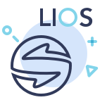

OUR MISSION To solve the copyright issues by using the blockchain technology and to allow everyone to participate in LIOS CRYPTO-ECOSYSTEM as a consumer, producer, or contributor. In order to achieve our mission, we uphold the principles of transparency and co-prosperity through fair profit sharing.
SYSTRAN TGE ‘LIOS’ Systran, which has led the machine translation technology from RBMT to NMT for 50 years, aims to create a new Linguistic Intelligence Open Source platform LIOS platform
LINGUISTIC INTELLIGENCE LIOS refers to Linguistic Intelligence Open Source. We will present a development alternative of participation and sharing based on Open-Source Neural Machine Translation (OpenNMT)